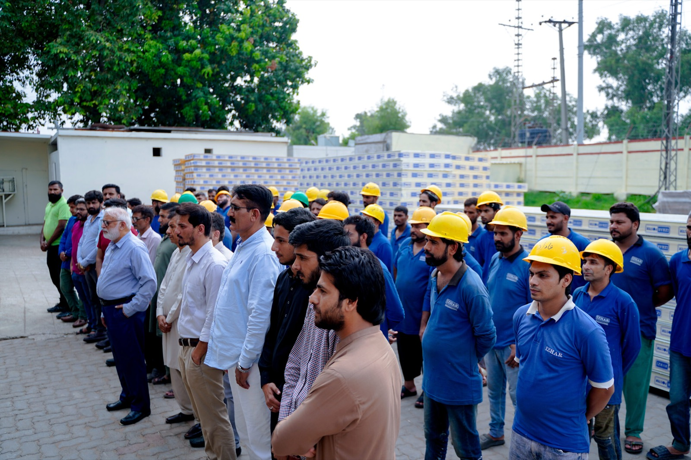
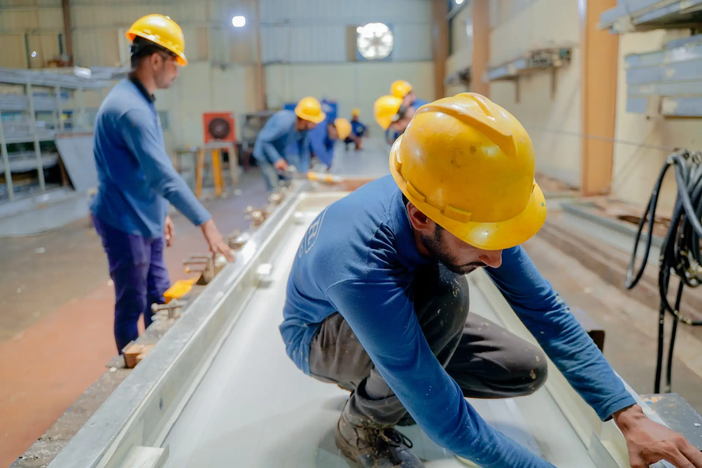
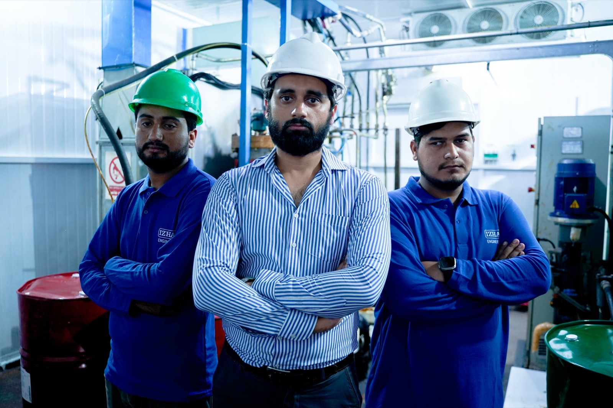

Emirates Supply Chain Services Lahore — multi-temperature 3PL cold store with four zones from −25°C frozen to GDP-compliant pharmaceutical
Izhar Foster designed and built the cold-chain infrastructure for Emirates Supply Chain Services (Pvt.) Ltd. at their Lahore HQ on 46 km Multan Road — a multi-temperature warehouse serving frozen FMCG, dairy and produce chilling, GDP-compliant pharmaceutical storage, and ambient-controlled grocery within a single FireSafe PIR envelope. Part of the UAE Sharaf Group's Pakistan cold-chain network operating 16 warehouses and 60,000 pallet positions across six cities.

Third-party logistics is the discipline of holding other companies' products — at the temperature, quality, and traceability standard those clients contractually require — and moving them through the supply chain without incident. Emirates Supply Chain Services, part of the UAE Sharaf Group's Pakistan operations, does this at industrial scale: 16 warehouses, over one million square feet of storage, 60,000 pallet positions, across six Pakistani cities, serving three global FMCG companies by name.
The cold-chain infrastructure at the Lahore HQ on 46 km Multan Road is the most complex part of that operation. It is not one cold store — it is four thermally distinct environments inside one building, each with its own refrigeration circuit, its own temperature-monitoring regime, and its own access discipline. Izhar Foster designed and built the FireSafe PIR envelope, refrigeration plant, insulated doors, and SCADA monitoring infrastructure that makes it work.
Four zones, one envelope
The engineering challenge that defines a multi-temperature 3PL cold store is this: every zone must hold its temperature independently, the zones must be thermally isolated from each other without a gap in the building envelope, and the whole must be maintainable by a single site engineering team. Emirates Logistics Lahore has four zones:
Zone 1 — Frozen FMCG (−18 to −25°C). The largest zone by volume, storing frozen consumer goods — confectionery, ready meals, frozen vegetables, ice cream — for the FMCG clients. Storage at −18°C is the international minimum for frozen food; at −25°C, the facility can serve clients with stricter hold-temperature requirements, including imported products that have been shipped at −22 to −25°C. The refrigeration plant for this zone is an ammonia rack with ceiling-mounted evaporators and hot-gas or electric defrost, sized for Lahore's 45°C summer ambient using Izhar Foster's ASHRAE-based load calculation methodology with 2.7%/K ambient derate above 35°C on low-temperature duty.
Zone 2 — Chiller (dairy, produce, +2 to +4°C). Fresh and chilled products — dairy, fresh produce, meat — held at +2 to +4°C. This zone sees the highest product throughput on a per-pallet basis; chilled product has a short shelf life and moves quickly. The refrigeration for this zone is a medium-temperature HFC or ammonia circuit (depending on zone size), with evaporators selected for minimum air-speed to avoid desiccating fresh produce. The insulated partition between this zone and the frozen zone at −25°C must be engineered for a 29 K temperature differential — a significant structural and thermal load on the PIR panel joinery.
Zone 3 — GDP-compliant pharmaceutical (+2/+8°C). This is the zone that separates a sophisticated 3PL operator from a generic warehousing company. Pharmaceutical products — vaccines, biologics, temperature-sensitive medicines — arrive at Lahore from Allama Iqbal International Airport, received by Emirates Logistics as part of the airport-linked pharmaceutical import chain, and held in this zone pending distribution to dispensaries, hospitals, and distributors. GDP compliance under DRAP and WHO TRS 961 Annex 9 means the zone is not merely cold — it is validated, monitored, alarmed, and documented to pharmaceutical regulatory standard.
Zone 4 — Ambient-controlled grocery (+15/+25°C). Ambient-controlled storage for shelf-stable grocery products that nonetheless require temperature protection: chocolate (anti-bloom), coffee (condensation prevention), spices (oxidation retardation). This zone is mechanically cooled rather than refrigerated, served by a DX split system or chilled-water AHU, and maintains temperature and relative humidity within the specified band year-round including in Lahore's 45°C summer. The PIR envelope here is thinner than the frozen zone but still necessary — without it, passive heat gain through the building skin during summer would exceed any practical mechanical cooling budget.

Panel joinery engineering at zone transitions
The most technically demanding element of a multi-temperature cold store is not the refrigeration plant — it is the envelope joinery at zone transitions. Where a −25°C frozen zone shares a partition wall with a +4°C chiller, the PIR panel must manage a 29 K differential across its thickness, and every penetration through that wall — electrical conduits, refrigerant pipework, data cables, drainage — must be vapour-sealed to prevent moisture migration into the panel structure.
Vapour pressure is higher on the warm side. Without a continuous vapour barrier on the +4°C face of the partition, moisture migrates by diffusion through the panel, reaching its dew point within the insulation and condensing. Over months and years, this condensation saturates the PIR foam, dramatically reducing its thermal conductivity, and corrodes the steel facers from the inside. The result is a panel that looks intact from the outside but has lost 30–50% of its insulation value internally — and which will eventually delaminate without warning.
Izhar Foster's design approach for the Emirates Logistics partition walls includes: PIR-filled panel joints with no metal-to-metal thermal bridges; vapour-sealed penetration collars on every pipe and conduit (closed-cell foam collar, taped at the panel face); heated baseplate strips where the partition meets the floor slab, preventing freeze-condensation at the panel foot; and a dew-point analysis for every wall assembly run at the specified design temperatures before construction begins. These are not optional enhancements — they are engineering prerequisites for a 20-year partition wall life.
At the zone-transition door openings, insulated rapid-slide doors are specified: they minimise the open time during forklift passes, reducing infiltration load, and their multi-stage perimeter gaskets maintain the vapour seal when closed. Where pedestrian access between zones is frequent, air-lock lobbies with sequential-interlocked doors prevent simultaneous opening, which would short-circuit the thermal separation entirely.

GDP pharmaceutical zone — engineering to WHO TRS 961
The pharmaceutical zone is the element of the Emirates Logistics project that requires the most rigorous engineering discipline, and the one where the gap between a real GDP-qualified cold store and a merely cold room is widest.
WHO Technical Report Series 961 Annex 9 — the international standard for pharmaceutical distribution — requires that a cold storage facility for +2/+8°C medicines:
- Maintains temperature within the validated range at all sensor positions under loaded and unloaded conditions, as demonstrated by a temperature-mapping study conducted pre-commissioning and at periodic re-validation intervals.
- Has calibrated temperature sensors with traceable calibration records, replaced or re-calibrated on an annual schedule.
- Operates a continuous monitoring system — SCADA or data logger — that records at intervals of 10 minutes or less, retains data for at least the shelf life of the longest-dated product plus two years, and can produce records in an audit-ready format.
- Has alarm notification that activates within 30 minutes of a temperature excursion, persists through grid power failure for a minimum of four hours (UPS-backed), and reaches the responsible person by phone or SMS.
- Has defined SOPs for temperature excursion response, product segregation during excursion, and quarantine pending quality assessment.
The SCADA system Izhar Foster specified for the Emirates Logistics pharma zone meets all of these requirements. Sensors are positioned at the validated worst-case locations identified during temperature mapping (typically high corners and door-adjacent positions, where the coldest and warmest readings occur under loaded conditions). A redundant data logger runs in parallel with the SCADA system, providing a secondary record that is independent of the SCADA software and its potential for data corruption.
The airport pharmaceutical import link adds a further requirement. Allama Iqbal International Airport in Lahore is a major pharmaceutical import point — vaccines, biologics, and temperature-sensitive medicines arrive by air from Europe and the Middle East. WHO TRS 961 requires a qualified receiving cold room at the airport logistics interface: a +2/+8°C room where product can be placed immediately on arrival from the aircraft hold, documented as compliant with the unbroken cold-chain requirement, and held pending customs clearance. Emirates Logistics' relationship with Izhar Foster on the cold room engineering extends to this airport receiving function.
Scope Izhar Foster delivered
| Zone | Temperature | Key specification |
|---|---|---|
| Frozen FMCG | −18 to −25°C | NH₃ rack, ceiling evaporators, hot-gas defrost |
| Chiller (dairy/produce) | +2 to +4°C | Medium-temp refrigeration, low-velocity evaporators |
| GDP pharma | +2/+8°C validated | SCADA logging, 4-hr UPS alarms, temperature mapping, WHO TRS 961 |
| Ambient-controlled | +15/+25°C | DX cooling + PIR envelope, RH control |
| Panel (frozen zone) | FireSafe PIR B1 | λ = 0.022 W/m·K, vapour-sealed joints |
| Zone partitions | PIR with vapour seal | Heated baseplates, closed-cell penetration collars |
| Doors | Rapid-slide insulated | Multi-gasket, sequential airlock lobbies at key transitions |
| Monitoring | SCADA + redundant data logger | 10-min intervals, SMS alarm, 4-hr UPS backup |
Why Emirates Logistics chose Izhar Foster
Emirates Supply Chain Services operates to global FMCG and pharmaceutical client standards — its contracts with global brands specify storage conditions, monitoring requirements, and audit access that a Pakistani warehousing company without genuine GDP engineering capability cannot meet. The selection of Izhar Foster for the Lahore cold-store build was not a price decision alone; it was a capability evaluation. Can the contractor design a validated pharmaceutical cold room to WHO TRS 961 standard? Can they specify a SCADA system that produces GDP-audit-ready records? Can they engineer a −25°C to +4°C partition wall that will hold its thermal performance for 20 years without vapour damage?
The answer in each case is the same: Izhar Foster's engineering team has done it before, has the calculation records to show how it was designed, and has the in-house PIR panel manufacturing capability — at the 277,460 sqft Lahore plant — to execute it without dependence on import lead times or third-party panel quality.
If you are scoping a multi-temperature 3PL cold store, a GDP-compliant pharmaceutical cold room, or a airport pharmaceutical receiving facility in Pakistan, request a quote with your zone temperatures, floor area, and city. Our engineers respond within 24 hours. You can also size the refrigeration load interactively with our cold room heat load calculator.
Other 3PL and cold-chain logistics projects in Pakistan.
How Emirates Logistics Lahore sits within Izhar Foster's portfolio of named logistics cold-chain installations.
Connect Logistics Karachi
Multi-bay cold-chain logistics warehouse with multiple loading docks and PIR roof-and-wall envelope, for third-party logistics operations in Karachi.
02Beverage · LahoreCoca-Cola TCCEC Lahore
High-bay finished-goods cold storage for The Coca-Cola Export Corporation's Lahore bottling operation — drive-in pallet racking and ammonia refrigeration.
03Food mfg · LahoreGourmet Foods Ice Cream Plant
Five-stage glycol-ammonia refrigeration for Gourmet Foods' Lahore ice cream plant — IQF hardening tunnel at −35°C and hardened storage at −28°C.
Questions about multi-temperature and GDP pharmaceutical cold storage in Pakistan.
What is a multi-temperature cold store and why do 3PL operators need them?
A multi-temperature cold store is a single warehouse structure maintaining multiple thermally distinct zones simultaneously — typically frozen (−18 to −25°C), chilled (+2 to +4°C), and ambient-controlled (+15 to +25°C). Third-party logistics operators need them because their client base spans multiple FMCG categories with incompatible storage requirements. A single structure with thermally isolated zones shares civil structure, SCADA infrastructure, loading docks, and security perimeter across all clients, making the economics far superior to separate facilities per temperature regime.
How are different temperature zones kept separate within the same warehouse?
Temperature zones are separated by FireSafe PIR partition walls between adjacent zones, insulated doors at every access point, and vapour sealing at every penetration. The most demanding transition is between a −25°C frozen zone and a +4°C chiller: the PIR partition must be thick enough to limit heat ingress within the design load budget, and every pipe and conduit penetration must be sealed with closed-cell foam or PIR-filled collars to prevent interstitial condensation — which over time degrades insulation value and causes panel delamination.
What is GDP compliance in pharmaceutical cold storage?
GDP — Good Distribution Practice — is the regulatory framework governing the storage and distribution of pharmaceutical products. For cold-chain pharmaceuticals (vaccines, biologics, temperature-sensitive medicines), GDP mandates: validated temperature ranges (+2 to +8°C), continuous monitoring with calibrated data loggers, minimum 4-hour alarm notification on temperature excursion, defined SOPs for excursion response, temperature mapping under loaded conditions, and records retention for the product shelf life plus two years. Izhar Foster's pharma cold rooms are designed to these requirements at the engineering stage.
What are WHO TRS 961 receiving cold rooms for pharmaceutical airport imports?
WHO Technical Report Series 961 Annex 9 defines quality standards for pharmaceutical storage and distribution. For airport pharmaceutical receiving — where temperature-sensitive medicines are imported by air and held between arrival and customs clearance — TRS 961 requires a dedicated +2/+8°C receiving room, continuous temperature monitoring during the handover period, validated temperature mapping, and documentary chain-of-custody. Izhar Foster's cold rooms for the Emirates Logistics airport receiving function were constructed and commissioned to meet this standard.
What SCADA and BMS features does a GDP cold store require?
A GDP-compliant cold store BMS must include: continuous temperature monitoring at validated sensor positions; calibration-traceable sensors with annual re-calibration records; alarm thresholds set inside the GDP specification boundary; minimum 4-hour UPS-backed alarm notification (phone, SMS, or console); remote monitoring access; and data export in audit-ready format. The SCADA system on the Emirates Logistics Lahore facility meets all of these requirements, with a redundant data logger providing a secondary record independent of the SCADA software layer.
How does Izhar Foster handle vapour-barrier design at zone transitions?
At every transition between a cold zone and a warmer adjacent space, the PIR panel system must incorporate a continuous vapour barrier on the warm side. Izhar Foster's partition wall design includes: PIR-filled joints with no thermal bridges, vapour-sealed penetration collars on every pipe and conduit, heated joint strips where the partition meets the floor slab, and a design-stage dew-point analysis for every wall assembly at the specified inside and outside conditions. These are engineering prerequisites for a 20-year partition wall life.
How much would your multi-zone cold store cost?
Rough cost estimate for a multi-temperature 3PL cold store with GDP pharmaceutical zone. ±20% indicative band — engineer validation required before quoting.
Open the rough estimator →